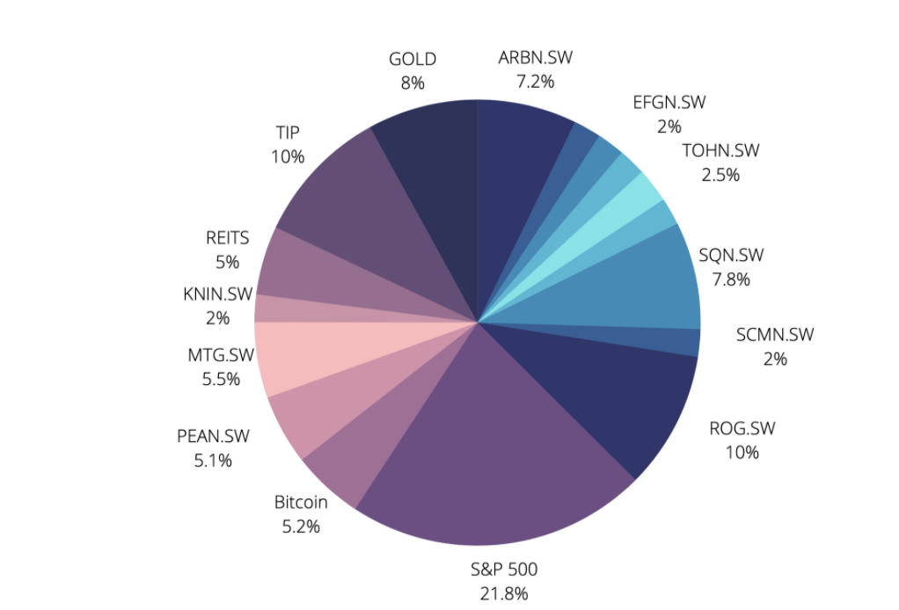

Tactical Asset Allocation
The asset allocation of our fund will be based on a multi-asset strategy adopting a risk parity approach to define the weights of the various assets.
Our fund will have a predominantly equity exposure, limiting the exposure of bonds to less than 20%, and allocating part of the capital to anti-inflationary assets such as TIPS, gold, real estate and Bitcoin.
The portion of the bond carrier will be shared among the Treasury Inflation-Protected Notes, which will help us to have a "buffer" against any market collapses to take advantage of any new opportunity, and high yields in Asia, which at this time have seen a decline in prices and could represent a medium-term opportunity.
A small portion of the fund will be exposed to Bitcoin through the fund of Grayscale, the main purpose is to ride the final phase of the current bull market with speculative intent, but we remain confident that this asset will prove important in the coming years to cope with currency debasement.
Finally, a portion of our portfolio will be exposed to gold and real estate, through a vanguard ETF on REITs and an iShares ETF that physically replies the price of gold, we expect that, in an inflationary environment, tangible assets such as gold and real estate can perform well and maintain better value than bonds.
At the current listing below 1800 dollars, gold presents a good upside opportunity being about 10% below its all-time high.
Portfolio Construction
To have a selection of stocks in which being exposed to overperform the market we tried to build estimates of their value based on different criteria.
The main factors in determining the intrinsic value of the stocks for our strategic asset allocation, due to the short time horizon of the challenge, was the seasonality of the sectors, followed by high market capitalization, some key financial indicators (mainly P/E and adjusted revenues growth), a momentum trend in the short term (less than 1 year, but weighting more the most recent months), and finally studying analysts consensus to determine the relative valuation of each stock to their main competitors.
From the equity screening, we obtained some interesting stocks that operate in the commodity sectors that could benefit in
an inflationary environment, so we also looking at the seasonality in stock return and have identified different companies that could have positive returns in this end quarter characterized by increasing demand.
In our fund we have selected the following assets

Past Returns Analysis
Over a backtesting period of 4 years, our portfolio gave an absolute return of 98% which is correspond to an 18% annualized return. The volatility associated with this portfolio is equal to 6.424% so we obtained a Sharpe ratio of 2.8.
On the other hand, The S&P 500 (our benchmark) in the same time horizon returned a 75% or a 15% annualized, with a volatility of 10.936% and a Sharpe ratio of 1.37.
In the last year, our portfolio obtain really satisfactory returns compared to the benchmark, with less severe draw-dawns and more accentuate performance spikes, but this is probably due to the bias in the stock picking over this year.
Performance First Mounth
After one month our portfolio has achieved a performance of 1.6%, which is quite close to the benchmark consisting solely of the S&P 500 which has performed a 2% of return.
If we look at the month as a whole, we can see that on average almost every day our portfolio outperformed the benchmark, so we think that even without the rebalancing in the second round our portfolio would most likely be back above the bench.
Analyzing individual assets, however, we can notice that the majority of individual stocks (only BLDR and WFG have a positive return at the end of the month) and Bitcoin did very well until mid-month and then fell back towards the end of the month.
Asian bonds were down from the start but were slowly but steadily climbing, after the progressive improvement in the expectations of an intervention of the Chinese government in the crisis of Evergrande.
In contrast, gold, REITs, TIPS, and the S&P 500, were bullish from the outset and maintained that trend until the end.
If we look at the assets that have provided us with the biggest gains, the BLDR stock is up 20%, giving us a gain of about 1.2 million dollars on our weighting in this stock, followed by the S&P ETF which is up 3.5%, giving us a profit of 0.8 million dollars.
In terms of losses, the biggest was the BTE stock, which depreciated by about 10%, causing us to lose 0.65 million dollars, followed by the OVV stock, which fell by 12%, causing us to lose 0.5 million dollars.
Summing up, our portfolio return has been consistent over the whole period, without suffering from extensive losses anytime. According to Bloomberg, in the last month, the Sharpe Ratio of our portfolio was 0.69. Considering an annual projection of this number in python we get a Sharpe Ratio of 2.49 which is very close to the last 12 months Sharpe Ratio of the benchmark (the S&P 500 index had a rolling 12-month Sharpe Ratio around 2.64).
However, given our particular asset allocation, to see an outperform in the sharpe ratio we have to consider the coming months in which our assets could express their hidden potential and obtain abnormal returns that would overcome volatility and therefore increase the sharpe ratio.

Rebalancing on the Swiss Market
To select the swiss stocks from the equity insights platform we first created a screening that was filtering the whole sample according to the following criteria:
- Stocks that are listed in Switzerland only.
- Company Investment grade on the platform greater or equal than “B”.
- Consistent Economic Margin at time 0.
- Economic margin forecast growth at 1 year greater than 0 (EM1-EM0 change).
- Economic Margin forecast 1-year monthly momentum (month over month change in the 1 year out
Economic Margin due to the changes in the 1 year out EPS estimates).
- Target price at least 5% above the current price.
- Positive Cash Flow growth 1-year projection.
If you are interested in learning more about each of our stocks, here is a detailed report with the performance of the first month and the rebalancing for the second.
Download the SharpedAlpha report
After applying these screenings we decided to use the equityinsights.com optimization algorithm to modify our allocation.
The optimization was aimed at achieving sector diversification (in line with our macroeconomic analysis and only consider Value or GARP (Growth At a Reasonable Price) investments.
We used the same optimization algorithm from first mounth however, we decided to add additional constraints to the optimization, in order to give more weight to our fundamental analysis (key of this part of the challenge). Every stock selected from Equity Insights had to have a minimum weight of 2%, we also changed the weight of gold, Asia HY and TIPS to reduce our exposure on these assets and constrained the SP500 to a percentage lower than 30%.
The resulting weights are as follow:
